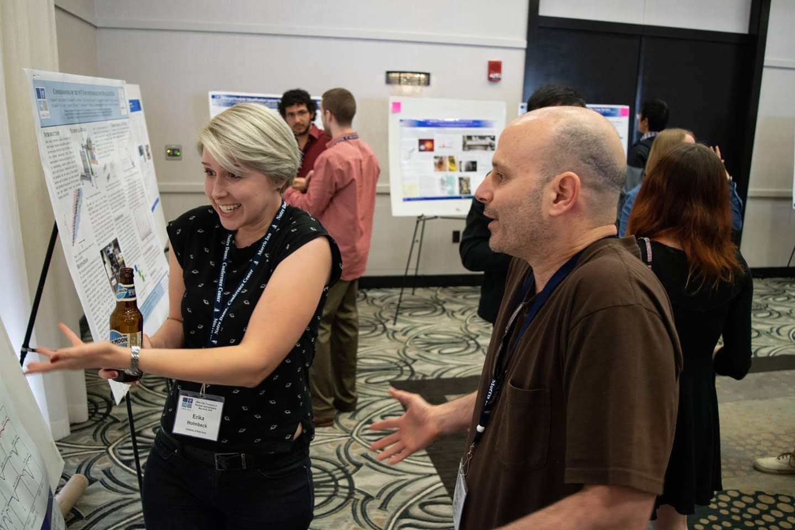

List of Talks
Click on the talk title to view or watch (►) presentation! (Works best in Safari)

As you can see, I am passionate about my work.
Click on the talk title to view or watch (►) presentation! (Works best in Safari)
As you can see, I am passionate about my work.